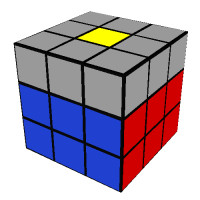
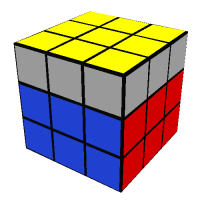

Speedsolving seems very simple at first but similar to the cube itself it is much more complicated than it first appears. There are many aspects that seperate the faster cubers from the slower ones.
Turn Speed
Turn speed may seem way more important than it actually is. Although turn speed is important you don't actually need to turn that fast to get good times.
Look Ahead
Look ahead is the most important part of speedsolving to top solvers. Look ahead is the ability to solve one thing while looking for the next thing. Good look ahead lets you avoid pauses which can add multiple seconds to a solve. Both knowledge and practice are what make you faster.
Algorithms
Algorithms let you do specific things incredibly quickly. Good algorithms allow for more efficient solutions and faster turn speed. Algorithms are also very personal, one algorithm may work for you while being terrible for another person. I actually have taken my algorithms from a few people trying to find the best ones for me.
First 2 Layers

F2L is initially taught intuitively but more advanced solvers treat each case as an algorithm. This PDF has many widely used algorithms to quickly solve f2l pairs from any side for all the possible cases.
Last Layer

There are many algorithm sets to solve the last layer. Most people use OLL (Orientation of the Last Layer)(57 cases) and PLL (Permutation of the Last Layer)(21 cases) pictured to the left, but there are other ways including...
ZBLL (Zborowski-Bruchem Last Layer) 472 Cases
COLL (Corners and Orientation of the Last Layer) 42 Cases
M moves are much more usable on 3x3 because bigger cubes have more layers. M move algorithm have less moves but have worse TPS (Turns Per Second) because of a regrip and fingertricks.
3x3
M2 U’ M U2 M’ U’ M2
M2 U' M2 U2 M2 U' M2
M2 U2 M U' M2 U' M2 U' M
Big Cubes
R' U R' U' R3 U' R' U R U R2
R2 U2 R U2 R2 U2 R2 U2 R U2 R2
R' U' R U' R U R U' R' U R U R2 U' R'
Decision Making
Decision making changes all other aspects of cubing. One turn can change a whole solve. Making different choices let's you set up better cases for later in the solve.